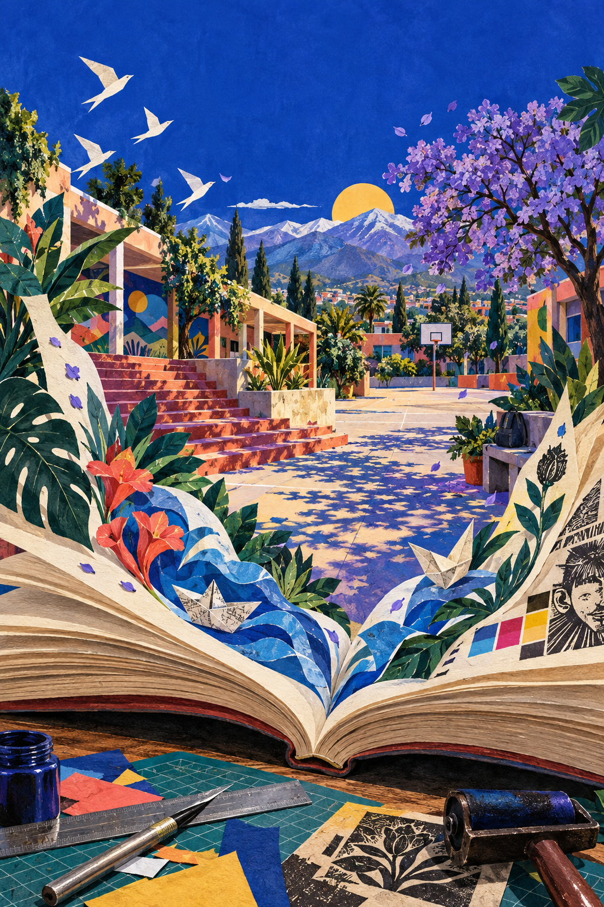
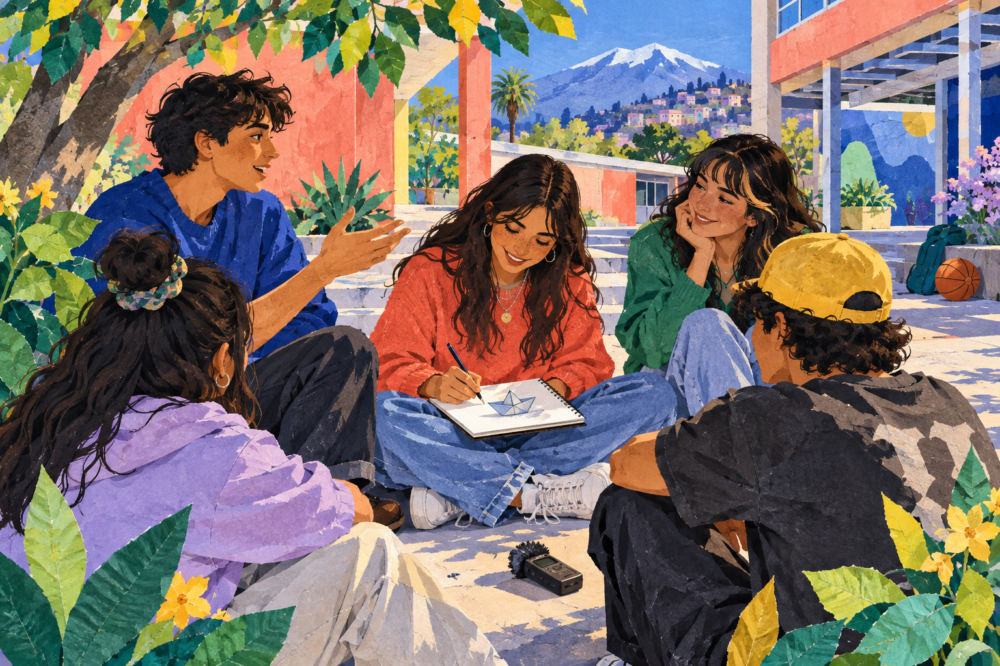
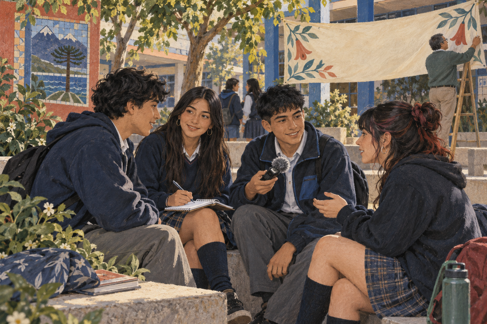
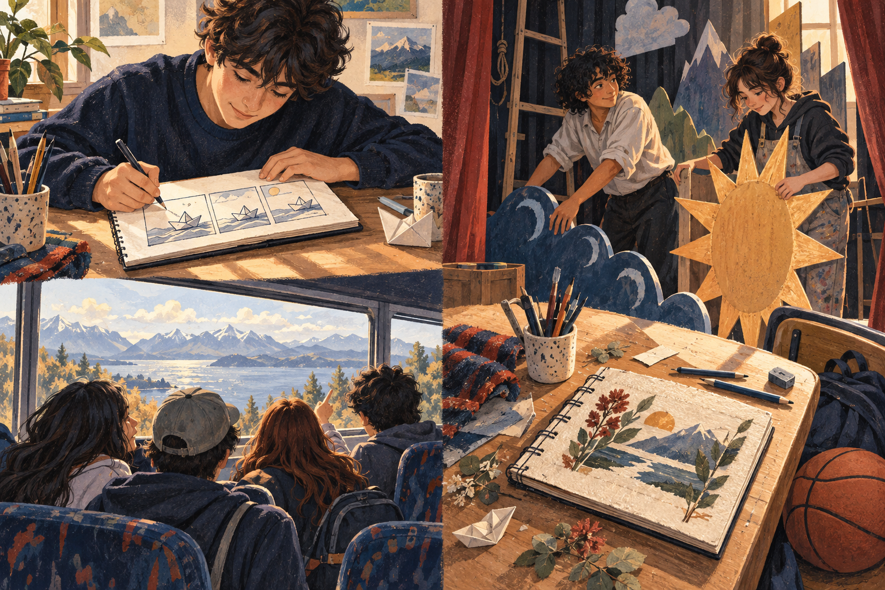
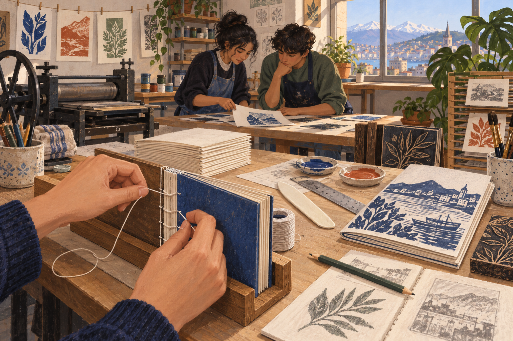
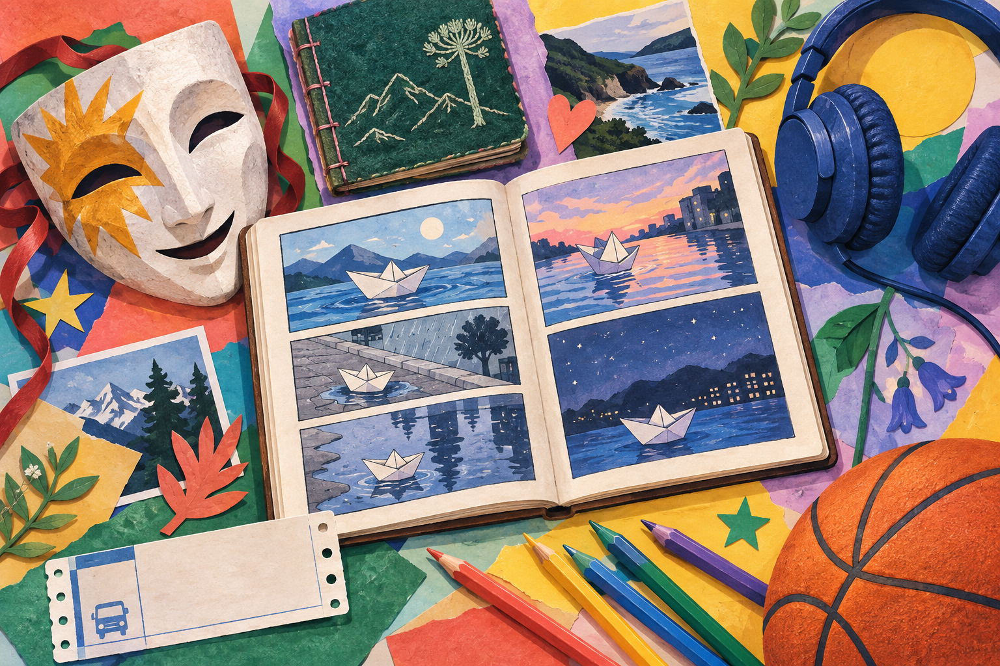
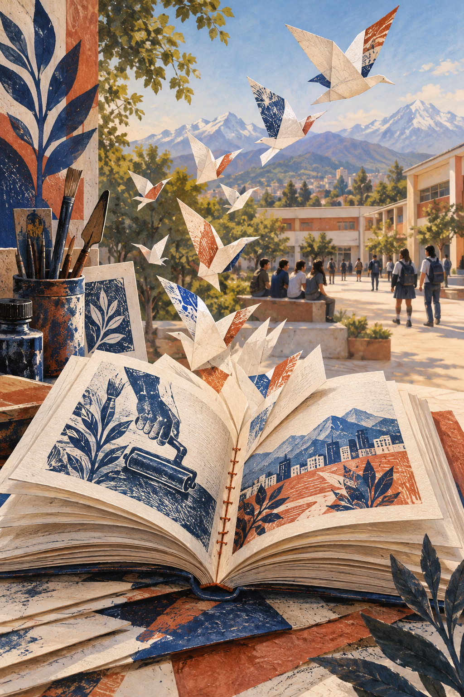

Huellas en papel

Lo que aprendimos juntos
Anuario 2026 · 4°D TP · CEST
Alex · personaje ficticio de esta edición
Modelo visual didáctico · textos e ilustraciones de ficción

Lo que aprendimos juntos
Anuario 2026 · 4°D TP · CEST
Alex · personaje ficticio de esta edición
Modelo visual didáctico · textos e ilustraciones de ficción
A quienes nos acompañaron incluso cuando nosotros mismos dudábamos. A nuestras familias, por los viajes temprano, las conversaciones y la paciencia. A los compañeros que compartieron una herramienta, explicaron una tarea o guardaron un lugar en la mesa. Este libro reúne algo de lo que cada uno nos ayudó a construir.

Este anuario nace de una pregunta: ¿qué queremos recordar cuando termine cuarto medio? Para responderla reunimos conversaciones, recuerdos y aprendizajes del taller. No quisimos guardar solamente las actividades que salieron bien. También incluimos los ensayos, los errores y las veces en que tuvimos que pedir ayuda.
Las páginas siguen un recorrido: primero escuchamos a compañeros y docentes; después miramos nuestra historia como curso y los trabajos que nos permitieron aprender un oficio. Al final quedan las amistades y las palabras que queremos llevar a la próxima etapa. Cada texto intenta explicar por qué una experiencia merece ser recordada. El libro es pequeño frente a todo lo vivido, pero permite detenerse y volver a mirar.
Este recorrido también deja lugar para intereses, anécdotas, actividades y decisiones personales. Son caminos posibles: cada estudiante puede elegir y combinar los que representan su historia. El orden y las 32 páginas de este modelo no son una cantidad obligatoria para todos.
Elegí un barco de papel para acompañar este libro. Cuando era pequeño los hacía con las hojas que sobraban de mis cuadernos. Algunos se abrían enseguida y otros resistían varios intentos. Ahora me recuerdan que aprender también es ajustar un doblez y volver a probar.
En las páginas aparecerá un pequeño navegante que dibujé con lápiz. No reemplaza mi historia: me ayuda a contar cómo me sentía al cambiar de curso, entrar al taller o mostrar un trabajo por primera vez. Sus recorridos son imaginados; las experiencias que cuento en mi anuario personal deben ser verdaderas.
Usaré azul, papel claro y pequeños detalles rojos. Los títulos podrán jugar con esas formas, pero el cuerpo del texto será sencillo. Quiero que el diseño invite a leer mi historia y que mis recuerdos sigan siendo lo más importante.
Empecé a guardar dibujos en una libreta. No eran perfectos, pero por primera vez reconocí algo mío en un objeto hecho a mano.
Aprendí los recorridos del colegio y los nombres de mis compañeros. Una actividad en parejas me permitió conversar con alguien que después sería mi amigo.
Visité los talleres y comparé lo que imaginaba de cada especialidad con lo que vi. Elegí Gráfica porque podía unir imágenes, palabras y trabajo manual.
Guardé una prueba de impresión que salió mal. Al compararla con la versión corregida entendí para qué servía revisar.
Las entrevistas me hicieron notar que una misma etapa podía significar cosas distintas para cada persona. El anuario empezó a ser una conversación.
Persona entrevistada: Emilia, personaje ficticio.
Registro escrito simulado: no existe audio de esta conversación. En tu trabajo debes conservar la grabación real y transcribirla fielmente.
Emilia: Recuerdo la primera prueba de impresión del cuadernillo. La imagen quedó muy oscura y pensamos que todo el trabajo se había perdido. Al comparar las pruebas descubrimos que podíamos corregirla. Me gustó que nadie tuviera que resolverlo solo.
Emilia: Aprendí a pedir ayuda antes de que el problema fuera más grande. En el taller comprendí que consultar no significa dejar de hacerse responsable. Después de recibir una explicación, yo debía probar y revisar mi parte.
Emilia: Nos describiría como un curso que aprende haciendo. Cuando organizamos la mesa de trabajo, cada uno mostró una manera distinta de ordenar los materiales. Terminamos eligiendo lo que funcionaba mejor para todos.
Emilia: Me ayudó una compañera que revisó conmigo los márgenes del primer diseño. No lo hizo por mí: me mostró cómo comprobarlos. Esa diferencia me permitió intentarlo después sin depender de ella.
Emilia: No esperen a saber hacerlo todo para comenzar. Empiecen, escuchen las observaciones y vuelvan a probar. A veces el avance se nota cuando uno compara el primer intento con el último.
Persona entrevistada: Diego, personaje ficticio.
Registro escrito simulado: no existe audio de esta conversación. En tu trabajo debes conservar la grabación real y transcribirla fielmente.
Diego: Recuerdo una actividad de aniversario en la que debíamos preparar un cartel. Ensayamos varias composiciones y nos costó elegir. Cuando lo vimos desde lejos entendimos que una idea sencilla podía comunicar mejor que muchas cosas juntas.
Diego: Me llevo la costumbre de revisar antes de entregar. Antes confiaba en que, si algo se veía bien en pantalla, estaba listo. Ahora miro los nombres, las medidas y la legibilidad en una prueba impresa.
Diego: Somos un curso con bastante humor. Eso nos ayudaba cuando una tarea se hacía larga, aunque también tuvimos que aprender a detener la conversación para terminar. En una entrega repartimos tiempos de trabajo y de revisión.
Diego: Un profesor nos pidió explicar nuestras decisiones en lugar de decir solamente que el diseño nos gustaba. Me hizo pensar en el lector y en lo que necesitaba encontrar primero en la página.
Diego: Guarden sus primeros trabajos. Ver los errores antiguos ayuda a reconocer lo aprendido. No todo merece publicarse, pero cada intento puede mostrar una parte del camino.
Persona entrevistada: Sofía, personaje ficticio.
Registro escrito simulado: no existe audio de esta conversación. En tu trabajo debes conservar la grabación real y transcribirla fielmente.
Sofía: Recuerdo cuando entrevisté a una compañera con la que casi no conversaba. Yo pensaba que conocía su experiencia escolar, pero me contó que un proyecto pequeño había sido muy importante para ella. Escucharla cambió la página que quería escribir.
Sofía: Aprendí que comunicar no es llenar un espacio. Hay que elegir qué merece estar ahí. En el anuario quité frases repetidas para que se entendiera mejor la idea principal y comprobé los cambios con la entrevistada.
Sofía: Nuestra generación tiene intereses diferentes. En un mismo equipo había quien prefería dibujar, quien escribía y quien revisaba medidas. Cuando reconocimos esas diferencias pudimos repartir mejor las tareas.
Sofía: Me influyó una devolución donde el docente señaló una idea que sí funcionaba antes de pedir cambios. Me ayudó a revisar sin pensar que todo estaba mal y a defender las decisiones que tenían sentido.
Sofía: Ojalá conservemos la curiosidad por las historias de los demás. Una pregunta hecha con atención puede acercarnos más que una fotografía donde todos aparecemos, pero nadie dice nada.
Persona entrevistada: Elena, personaje ficticio.
Registro escrito simulado: no existe audio de esta conversación. En tu trabajo debes conservar la grabación real y transcribirla fielmente.
Elena: Distingo su disposición a probar cuando el trabajo tiene un propósito claro. En una actividad de memoria escolar observaron que sus recuerdos no eran idénticos. En vez de elegir una sola versión, buscaron qué aportaba cada mirada.
Elena: Recuerdo una conversación en la que un estudiante corrigió con respeto un dato de una entrevista. El grupo volvió al registro y comprobó la información. Fue una buena muestra de que revisar también es cuidar a otros.
Elena: Espero que conserven la capacidad de preguntar y de reconocer cuando no saben algo. En el estudio y en el trabajo encontrarán problemas nuevos. Saber buscar ayuda y evaluar una respuesta seguirá siendo necesario.
Elena: Les aconsejaría cumplir los acuerdos pequeños. Llegar a una reunión, avisar si hay una dificultad y entregar lo comprometido construyen confianza. Esa confianza se forma con acciones repetidas, no con una sola promesa.
Elena: Lleven sus aprendizajes con orgullo y con disposición a seguir aprendiendo. Un oficio cambia y las personas también. Lo importante es mantener el cuidado por el trabajo y por quienes lo reciben.
Persona entrevistada: Tomás, personaje ficticio.
Registro escrito simulado: no existe audio de esta conversación. En tu trabajo debes conservar la grabación real y transcribirla fielmente.
Tomás: Esta generación ha aprendido a mostrar el proceso. Al principio muchos querían enseñar solamente el resultado final. Después comprendieron que un boceto, una prueba fallida y una corrección permiten explicar mejor una decisión.
Tomás: Recuerdo una jornada de encuadernación en la que algunos terminaron antes y ayudaron a revisar el orden de los pliegos de sus compañeros. Lo valioso fue que orientaron sin reemplazar el trabajo de cada uno.
Tomás: Quisiera que conservaran la atención a los detalles. Una medida equivocada puede afectar una pieza completa. Revisar a tiempo cuida materiales, esfuerzo y la confianza de quien encargó el trabajo.
Tomás: Antes de aceptar una tarea, pregunten qué se necesita y para cuándo. Luego revisen si cuentan con los recursos. Si aparece una dificultad, comuníquenla de inmediato y propongan una alternativa posible.
Tomás: Un buen trabajo lleva la huella de muchas personas. Reconozcan a quienes les enseñaron, compartan lo que saben y no dejen de practicar. La experiencia crece cuando se trabaja con atención.

Emilia es una estudiante ficticia de cuarto medio de la especialidad de Gráfica. En esta entrevista de ejemplo recuerda una prueba de impresión y explica cómo cambió su manera de pedir ayuda. Su experiencia permite observar la relación entre el trabajo individual y la colaboración, una idea que recorre este anuario.
¿Qué experiencia recuerdas y por qué?
Recuerdo la primera prueba de impresión del cuadernillo. La imagen quedó muy oscura y pensamos que todo el trabajo se había perdido. Al comparar las pruebas descubrimos que podíamos corregirla. Me gustó que nadie tuviera que resolverlo solo.
¿Qué aprendizaje te llevas?
Aprendí a pedir ayuda antes de que el problema fuera más grande. En el taller comprendí que consultar no significa dejar de hacerse responsable. Después de recibir una explicación, yo debía probar y revisar mi parte.
¿Qué mensaje dejarías en el anuario?
No esperen a saber hacerlo todo para comenzar. Empiecen, escuchen las observaciones y vuelvan a probar. A veces el avance se nota cuando uno compara el primer intento con el último.
La mañana del aniversario, nuestro cartel seguía sobre una mesa y todavía faltaba pegar algunas letras. Afuera comenzaban las actividades, pero nosotros discutíamos qué color usar para que el mensaje se leyera desde el patio. Alguien propuso mirarlo a varios metros de distancia. Esa prueba sencilla terminó la discusión.
Mientras un grupo ajustaba las letras, otros buscaron materiales y ordenaron lo que sobraba. No todo salió como esperábamos: una esquina se despegó y hubo que reforzarla antes de llevar el cartel afuera. La dificultad nos obligó a repartir mejor las tareas. Esta vez preguntamos quién necesitaba ayuda en lugar de asumir que cada uno ya sabía qué hacer.
Cuando finalmente lo instalamos, nos quedamos un momento observándolo. No era el trabajo más complejo que habíamos hecho, pero reconocíamos decisiones de todos. La fotografía que elegí para esta página representa esa pausa después del esfuerzo, cuando ya no estábamos apurados y podíamos conversar.
Con el tiempo olvidé algunos detalles de la actividad, pero conservé esa sensación de haber resuelto algo juntos. El aniversario me enseñó que pertenecer a un curso no depende solamente de compartir una sala. También se construye cuando una tarea nos obliga a escuchar, colaborar y cuidar lo que hacemos.
En primero medio, la profesora Elena nos ayudó a dejar de ser un grupo de desconocidos. Recuerdo una actividad en la que cada uno debía presentar a un compañero después de escucharlo. Parecía sencilla, pero descubrimos intereses que no se notaban durante las clases. De ella aprendí que convivir empieza por prestar atención.
En segundo, el profesor Tomás insistía en que los acuerdos debían tener responsables. Cuando organizamos una actividad del curso, nos hizo anotar quién conseguiría los materiales y cuándo los entregaría. Olvidamos una parte y tuvimos que reorganizarnos. No resolvió el problema por nosotros: nos acompañó a encontrar una salida.
Hoy relaciono esos dos aprendizajes. Escuchar sin organizarse deja buenas intenciones; organizarse sin escuchar deja personas afuera. Ambos fueron importantes para trabajar juntos en los años siguientes.
Al profesor Martín le diría que recordaré sus preguntas más que sus discursos. Cuando una entrega se acercaba y estábamos atrasados, preguntaba qué podíamos resolver ese mismo día. Esa forma de conversar nos ayudó a dejar de mirar el trabajo como una montaña imposible.
En una revisión del anuario nos pidió explicar por qué habíamos elegido una fotografía. Respondimos que se veía bonita. Entonces preguntó qué historia contaba. Volvimos a mirar las imágenes y escogimos una donde aparecía el curso ayudando a ordenar el taller. No era la más perfecta, pero decía más de nosotros.
Gracias por acompañarnos sin decidir todo en nuestro lugar. Me llevo la idea de que terminar bien una etapa también significa hacerse responsable de las decisiones pequeñas y de las personas con quienes las compartimos.
Nuestro curso tiene distintas maneras de participar. Algunos proponen ideas de inmediato; otros necesitan observar antes de hablar. En el taller aprendimos que ambas formas pueden ayudar. Quien se atreve a probar abre un camino y quien revisa con calma encuentra detalles que faltaban.
No siempre fue fácil ponerse de acuerdo. A veces repartíamos las tareas sin comprobar si todos las habían entendido. Eso nos hizo perder tiempo y repetir trabajos. Con la práctica empezamos a anotar los acuerdos y a mostrar avances antes de la entrega.
Si tuviera que elegir una escena para describirnos, escogería una mesa llena de papeles, alguien buscando una regla y otro explicando cómo doblar un pliego. Allí se mezclaban el ruido, el humor y las ganas de terminar. Así quiero recordar a 4°D: aprendiendo a trabajar con otros.
El día de la presentación buscamos la maqueta por todas partes. Revisamos las mochilas, la mesa y hasta el estante donde guardábamos las reglas. Cada uno estaba seguro de haberla dejado en un lugar distinto.
Emilia propuso detenernos y reconstruir lo que habíamos hecho. Diego había llevado la prueba a imprimir; yo había recogido los papeles; Sofía había guardado el trabajo para que no se doblara. Cuando llegamos a esa parte de la conversación, nos miramos: estaba dentro de la carpeta grande que nadie había abierto.
Nos reímos, pero todavía tuvimos que ordenar las páginas y comprobar que fueran la última versión. Alcanzamos a presentar sin correr. Después decidimos poner el nombre del proyecto y la fecha en cada carpeta.
No fue una gran aventura. Precisamente por eso la recuerdo: muestra nuestro desorden de esa mañana y una solución que seguimos usando. Desde entonces, antes de decir que algo se perdió, empezamos por revisar los acuerdos.

En el taller de teatro preferí trabajar detrás de escena. Al principio creía que mi tarea era menos importante que actuar, porque el público no me vería. Me encargaron preparar unas piezas de cartón y comprobar que pudieran moverse sin interrumpir la obra.
En el ensayo una de ellas se cayó. La base era demasiado pequeña y habíamos decorado antes de probarla. Pedí ayuda, hicimos una nueva y acordamos revisar cada cambio antes de continuar. El día de la función pude escuchar la obra desde un costado mientras esperaba mi señal.
Aprendí a cumplir un papel dentro de un equipo. También descubrí que el diseño puede ayudar a contar una historia sin ocupar el centro de la escena. Esa experiencia es la que elijo para mi anuario; otra persona podría contar un partido, una misión, una campaña solidaria o un ensayo musical.
Pie de imagen del modelo: escenas ficticias de creación y colaboración; ilustración con IA, 2026.
Antes de visitar un taller de impresión imaginaba que todo se resolvía al enviar un archivo a una máquina. Durante el recorrido vimos cómo se revisaban medidas, colores y pliegos antes de producir varias copias.
Lo que más me llamó la atención fue una mesa con pruebas marcadas. Había correcciones pequeñas que, juntas, cambiaban mucho la lectura. Pregunté por qué guardaban versiones que no iban a entregar y nos explicaron que permitían comparar decisiones y evitar repetir errores.
En el viaje de vuelta conversamos sobre nuestros primeros trabajos. Yo recordé un título demasiado cerca del borde y una fotografía que se veía oscura. La visita me ayudó a relacionar esas dificultades con un proceso más amplio.
Para el anuario elegí contar esa escena y no enumerar cada lugar por donde pasamos. Su importancia está en lo que me hizo comprender: una pieza impresa lleva un trabajo de revisión que casi nunca se ve. Lugar y visita de este ejemplo son ficticios.

EL DESAFÍO
Crear un cuadernillo que pudiera abrirse con facilidad y conservar sus páginas ordenadas. Queríamos que la encuadernación acompañara el contenido y resistiera la lectura.
CÓMO LO HICIMOS
Primero dibujamos una maqueta y distribuimos los textos. Después imprimimos una prueba para comprobar el orden de lectura, los márgenes y el tamaño de las letras. Al doblar los pliegos descubrimos que algunas páginas no coincidían: corregimos la organización antes de continuar.
Marcamos los puntos de costura sobre una guía y practicamos el recorrido del hilo. Durante el montaje revisamos la tensión para que el libro pudiera abrirse sin deformarse. Un compañero comprobó la secuencia de páginas y otro observó la terminación.
LO QUE APRENDIMOS
Aprendimos que la calidad no aparece solamente al final. Cada decisión afecta la siguiente: si la maqueta está desordenada, la encuadernación no puede arreglarla. La prueba de impresión y la revisión compartida nos permitieron corregir a tiempo y explicar cómo habíamos construido el objeto.
Cuadernillo de memoria escolar con encuadernación cosida.
Alex: textos y revisión; Emilia: diseño; Diego: pruebas; Sofía: orden de páginas y pies de imagen.
Papel para interiores, cartulina para cubierta, hilo de encuadernación, aguja adecuada, plegadera, regla y base de trabajo.
1. Diseñar la maqueta.
2. Imprimir una prueba y comprobar el orden.
3. Doblar y reunir los pliegos.
4. Marcar los puntos con la guía del taller.
5. Coser con supervisión docente y comprobar la apertura.
6. Revisar y corregir la terminación.
Texto legible, páginas completas y ordenadas, costura estable y cubierta alineada. Las medidas y los materiales definitivos se acuerdan en Gráfica.
En Lengua y Literatura aprendí que entrevistar no consiste solamente en leer preguntas. Durante una práctica preparé un guion y pensé que eso era suficiente. Sin embargo, una respuesta abrió un tema que yo no había considerado. Tuve que escuchar y formular una nueva pregunta.
Al transcribir noté repeticiones, pausas y expresiones que no podía trasladar mecánicamente a una página. Revisé el audio para conservar el sentido y diferencié la transcripción del texto editado. Elegir una cita también exigió cuidado: debía ser breve, pero representar lo que la persona quiso decir.
Ese trabajo me sirve en Gráfica. Antes de diseñar una pieza necesito comprender a quién está dirigida y qué quiere comunicar. Escuchar, seleccionar información y revisar son parte del oficio, aunque no siempre aparezcan en el resultado impreso.
Mi asignatura favorita fue el taller de Gráfica porque me permitió convertir una idea en un objeto que otras personas podían usar. También me gustó que el resultado mostrara con claridad lo que todavía debía mejorar. Una página podía verse bien en pantalla y ser difícil de leer al imprimirla.
Recuerdo la primera vez que encuaderné un cuadernillo. Los dobleces no coincidían y el hilo quedó demasiado apretado. Me frustré, pero al comparar mi trabajo con la muestra entendí dónde había fallado. Volví a doblar, medí otra vez y pedí que un compañero revisara conmigo.
No se convirtió en mi favorita porque todo fuera fácil. Me gustó porque podía observar mi progreso. Aprendí que tener paciencia no es esperar sin hacer nada: es revisar, corregir y volver a intentarlo con más atención.

DIBUJAR PARA OBSERVAR
Llevaba una libreta donde anotaba formas que encontraba en el camino. Al comparar dibujos de distintos meses descubrí que empezaba a mirar proporciones y sombras con más atención.
EL BÁSQUETBOL Y LOS ACUERDOS
En los recreos aprendí que un partido no avanzaba si todos queríamos decidir solos. Hablar antes de comenzar y aceptar turnos fue tan importante como practicar los lanzamientos.
HISTORIAS QUE INVITAN A ELEGIR
Me gustan los juegos de exploración donde cada decisión abre una ruta distinta. Ese interés me dio una idea para el anuario: presentar algunos recuerdos como cruces de camino y explicar por qué elegí seguir por uno.
No necesito que el lector comparta mis gustos. Quiero mostrar cómo estuvieron presentes en mi vida escolar y qué aprendí mientras los disfrutaba.
Viñeta 1. Un pequeño navegante mira un barco de papel sin terminar. Dice: «Todavía no sé por dónde empezar».
Viñeta 2. Una compañera le muestra el primer doblez. Él responde: «Voy a probar».
Viñeta 3. El barco se abre. Ambos observan la base y la doblan de nuevo.
Viñeta 4. El navegante deja el barco junto a una libreta. Dice: «No llegó lejos todavía, pero ya sé cómo seguir».
Este guion ficticio representa el proceso de mostrar un primer intento, escuchar una ayuda y hacer una nueva versión. Lo elegí porque quiero que mi anuario conserve también los trabajos en proceso. En una edición personal lo acompañaría con cuatro viñetas dibujadas por mí. La ilustración con IA del modelo muestra escenas de creación; no se presenta como un dibujo hecho por un estudiante.
Imagen 1. Alex, Emilia, Diego y Sofía, personajes ficticios, comparten una entrevista en el patio. Ilustración con IA, 2026.
Escucharnos también fue una forma de conocernos. En el anuario real, este espacio lleva una fotografía propia con nombres verificados y permiso para publicarla.
Imagen 2. Colaboración en un taller de Gráfica imaginario. Ilustración con IA, 2026.
Pedir ayuda hizo que el trabajo avanzara.

Imagen 3. Libro abierto y aves de papel en un patio imaginario. Ilustración con IA, 2026.
Los recuerdos toman otra forma cuando los compartimos.
Imagen 4. Dibujar, colaborar en una obra y mirar por la ventana de un viaje: escenas ficticias de participación escolar. Ilustración con IA, 2026.
Cada persona conserva un recorrido diferente. Esta galería usa cuatro ilustraciones distintas para mostrar cómo relacionar imágenes y recuerdos. En tu versión puedes seleccionar fotografías propias autorizadas o creaciones tuyas, identificando sus autores y lo que representan.
Querido Alex del futuro:
Espero que todavía guardes alguna de estas páginas, aunque ya no pienses exactamente igual. Hoy quiero seguir aprendiendo sobre diseño editorial, pero también sé que me faltan experiencias para decidir. Mi primer paso será conocer distintas formas de estudiar y trabajar, preguntar por sus condiciones y preparar una carpeta con mis mejores proyectos.
Ojalá no conserves solamente los trabajos terminados. Guarda un boceto, una corrección y la fotografía de una mesa compartida. Pueden recordarte que aprendiste con otras personas y que pedir ayuda formó parte del camino.
Si cambiaste de idea, espero que puedas explicar por qué y seguir con curiosidad. No quiero dejarte una lista de éxitos obligatorios. Quiero recordarte que escuches, cumplas tus acuerdos y busques tiempo para aquello que te importa.
Alex, personaje ficticio de esta edición didáctica.
Llegamos a cuarto medio con experiencias distintas y terminamos compartiendo una mesa de trabajo. En ella quedaron conversaciones, papeles, pruebas y errores que nos enseñaron más de lo que imaginábamos. No todos recordaremos los mismos momentos, pero cada uno lleva una parte de lo que vivimos juntos.
Me despido agradeciendo las ayudas pequeñas: una explicación antes de entregar, una pregunta hecha a tiempo y la paciencia de quien esperaba mientras yo terminaba. También me llevo las dificultades, porque nos obligaron a hablar con más claridad y a hacernos responsables de nuestros acuerdos.
No sé dónde estaremos dentro de algunos años. Espero que podamos mirar estas páginas y reconocer algo nuestro: el humor, el esfuerzo y la disposición a volver a intentar. El colegio termina como etapa; lo que aprendimos con otros sigue acompañándonos.
Gracias a nuestras familias por acompañar este proceso y ayudarnos a recuperar recuerdos. A los compañeros que aceptaron conversar y revisar sus palabras antes de publicarlas. A los docentes que nos enseñaron a observar, preguntar y corregir. Al taller de Gráfica, por convertir los textos en un objeto que podemos compartir. Y a quienes hicieron las tareas menos visibles: ordenar archivos, revisar nombres y probar otra vez cuando una página no resultó.
Título: Huellas en papel.
Edición didáctica de ejemplo: Estudia CEST, 2026.
Textos: relatos ficticios creados para modelar el trabajo escolar; no corresponden a declaraciones reales.
Personajes: Alex, Emilia, Diego, Sofía, Elena, Tomás y Martín; todos ficticios.
Ilustraciones: ocho imágenes originales generadas con la herramienta de imágenes de OpenAI para este modelo. No son fotografías del colegio ni del curso.
Diseño de referencia: fondos de color en todas las páginas, líneas de tiempo, citas destacadas, fichas, galerías y una paleta común.
Producción propuesta para el estudiante: revisión en Lengua y Literatura; diagramación, prueba de impresión y encuadernación cosida en Gráfica; tres copias finales.
Fuentes: textos e ilustraciones originales de esta edición didáctica.
Criterio de edición: estructura común y capítulos personales a elección. Los avances recibidos orientaron las posibilidades de contenido; no se reproducen aquí textos, fotografías ni datos personales de estudiantes.
Una conversación en el patio, una página corregida y un cuadernillo cosido a mano. En esos gestos cotidianos también está nuestra historia. Este anuario reúne voces y aprendizajes de una generación que comienza a mirar más allá del colegio.
Lo que hicimos juntos sigue con nosotros.
4°D TP · CEST · 2026